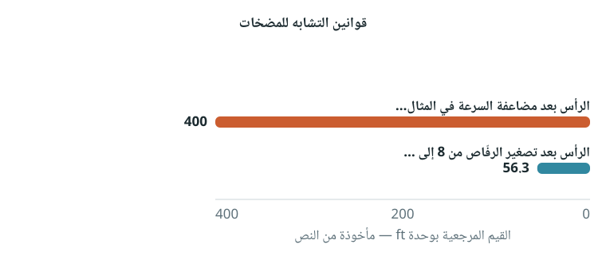

قوانين التشابه للمضخات
Pump Affinity Laws
ثلاث نسب تربط تدفق المضخة الطاردة المركزية ورأسها وقدرتها بسرعة دورانها أو بقطر رفّاصها: التدفق يتناسب طرديًّا مع السرعة، والرأس مع مربعها، والقدرة مع مكعّبها — فزيادة السرعة عُشرًا تزيد القدرة ثلثًا.
قوانين التشابه (affinity laws) هي أسرع أداة لتقدير أثر تغيير السرعة أو قطر الرفّاص على مضخة قائمة، وهي مبنية على تحليل أبعادي لمضخات متشابهة هندسيًّا تعمل بأرقام رينولدز عالية متقاربة. صورتها المبسّطة عند ثبات قطر الرفّاص: التدفق الحجمي يتناسب طرديًّا مع عدد الدورات، والرأس مع مربعه، والقدرة الممتصّة مع مكعّبه؛ وتبقى النسب نفسها عند ثبات السرعة وتغيير القطر بالنسب نفسه. وسبب اختلاف الأسّ واضح فيزيائيًّا: كل الحجوم المتبادلة تتناسب مع السرعة النسبية للمائع داخل الرفّاص، والرأس مع مربعها لأنه طاقة حركية لكل وحدة وزن، والقدرة حاصل ضرب التدفق في الرأس أي أسّ (1+2)=3. ولهذا فخنق التدفق بالصمام يكسر القاعدة ولا يوفّر طاقة، أما تغيير السرعة فيوفّرها بأسسها الحقيقية — ومن هنا صار تغيير السرعة (VFD) الخيار الأول في ترشيد مضخات الأنظمة ذات حمل متغيّر. والقيود مهمة: الانحراف يزيد عند تغيّر كبير في السرعة، وعندما يقترب رقم رينولدز من حدّه الحرج، أو حين ينتقل التشغيل إلى منطقة الجريان الانهياري أو بعيدًا عن نقطة الكفاءة العظمى.
كيف تعمل الظاهرة؟
الرفّاص الدوّار يمنح المائع سرعة نسبية تتناسب مع سرعة طرف الريشة، أي مع حاصل ضرب السرعة الزاوية في نصف القطر. ومن هذه السرعة يأتي كل شيء: مركّبة السرعة الشعاعية تحدّد كمية التدفق، ومركّبة السرعة المماسية تحدّد الرأس الذي يُحوَّل في الناشر إلى ضغط، والقدرة هي التدفق مضروبًا في الرأس مقسومًا على الكفاءة. وخفض السرعة إلى النصف لا ينصّف القدرة بل يُنزل بها إلى ثمنها، وهذا هو منشأ العائد الكبير لتحكّم السرعة في المضخات التي تعمل معظم وقتها على حمل أقل من تصميمها.
العلاقة بالأرقام
الصيغة التي يعمل بها المصدر: q₂/q₁ = (n₂/n₁)(d₂/d₁)، و Δp₂/Δp₁ = (n₂/n₁)²(d₂/d₁)²، و P₂/P₁ = (n₂/n₁)³(d₂/d₁)³. والمثال المنشور صريح: من 1750 إلى 3500 دورة/دقيقة تصير 100 gal/min إلى 200 gal/min، و100 ft إلى 400 ft، و5 bhp إلى 40 bhp. وعند تصغير الرفّاص من 8 إلى 6 إنش بسرعة ثابتة: 100 gal/min تصير 75، و100 ft تصير 56.3 ft، و5 bhp تصير 2.1 bhp. وتُستخدم السرعة النوعية Ns لضبط الشكل الذي تُطبَّق عليه هذه النسب، إذ يقع القطري في نطاق مئات إلى آلاف وتخرج المحورية إلى نطاقات أعلى.
مفاهيم متقاربة
الخطأ الأول أن تُطبَّق النسب على النظام لا على المضخة: نقطة التشغيل هي تقاطع منحنى المضخة مع منحنى النظام، وتغيير السرعة يحرّك منحنى المضخة وحده، فيجب إعادة التقاطع مع منحنى النظام (الذي قد يتغيّر بدوره في أنظمة التدفق الطبيعي). والثاني أن يُعتبر الأسّ 3 قانونًا في كل الظروف؛ فقرب نقطة التشغيل من الكفاءة العظمى شرط ضمني، والانحراف قد يبلغ نسبًا ملموسة عند نصف السرعة. والثالث أن يُنسى أثر التآكل والخلوصات: المضخة القديمة لا تنطبق عليها نسب المصنع.
حدود التطبيق
تصلح النسب لمضخات متشابهة هندسيًّا في نطاق أرقام رينولدز المضطربة العالية، وتنحرف عند السرعات المنخفضة جدًّا أو مع سوائل لزجة جدًّا أو عند تصغير الرفّاص بنسبة كبيرة (أكثر من 20% تقريبًا) لأن التشابه الهندسي يختلّ. ولا تُغني عن منحنى المصنع عند مزج سوائل ذات كثافة أو لزوجة مختلفة، لأن تغيّر الكثافة يحرّك القدرة والرأس معًا، وتغيّر اللزوجة ينقل المنحنى كاملًا.

| الكمية | القيمة | المصدر |
|---|---|---|
| التدفق بعد مضاعفة السرعة في المثال القياسي (1750 ← 3500 دورة/دقيقة بقطر ثابت) | 200 gal/min | [1] |
| الرأس بعد مضاعفة السرعة في المثال نفسه | 400 ft | [1] |
| القدرة الممتصّة بعد مضاعفة السرعة في المثال نفسه | 40 bhp | [1] |
| الزيادة في القدرة مقابل زيادة 10% في السرعة (المصدر يذكر الرأس +21% والتدفق +10% معها) | 33 % | [1] |
| الرأس بعد تصغير الرفّاص من 8 إلى 6 إنش بسرعة ثابتة (الرأس الابتدائي 100 ft) | 56.3 ft | [1] |
المصادر
- 1 Affinity Laws for Pumps: Principles, Formulas & Calculator — The Engineering ToolBox. www.engineeringtoolbox.com/affinity-laws-d_408.html · اطُّلع عليه 2026-11-28
- 2 Pumps — Specific Speed — The Engineering ToolBox. www.engineeringtoolbox.com/specific-speed-pump-fan-d_637.html · اطُّلع عليه 2026-11-28
استشهد بهذا المصطلح
الصيغتان مبنيتان من بيانات الصفحة نفسها: العنوان والتاريخ ورابط النسخة المنشورة.
قوانين التشابه للمضخات — Pump Affinity Laws. (2026). ديوان المعرفة — انفراد. https://infiradev.com/diwan/terms/term-pump-affinity-laws.html
@misc{term-pump-affinity-laws2026,
title = {قوانين التشابه للمضخات},
titleaddon = {Pump Affinity Laws},
howpublished = {{ديوان المعرفة — انفراد} — مرجع علمي عربي},
year = {2026},
url = {https://infiradev.com/diwan/terms/term-pump-affinity-laws.html},
urldate = {2026-11-28},
note = {مراجعة علمية: Abdullah Al-Huwaidi}
}
راجعه: Abdullah Al-Huwaidi · 2026-11-28 · آخر تحديث 2026-11-28